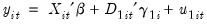
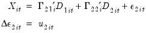
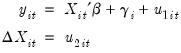
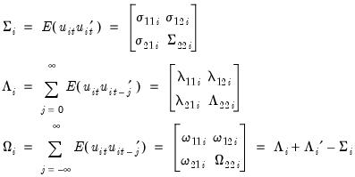
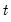
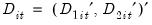
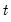
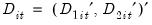
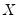
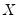

|
|
|

 are deterministic trend regressors which are included in the regressors equations but excluded from the cointegrating equation (see “Cointegrating Regression” for further discussion).


 and periods , where  are deterministic trend regressors and the
and periods , where  are deterministic trend regressors and the  stochastic regressors
stochastic regressors  are governed by the system of equations:
are governed by the system of equations: and  is assumed to be homogeneous across cross-sections, and that the specification allows for cross-section specific deterministic effects.
and  is assumed to be homogeneous across cross-sections, and that the specification allows for cross-section specific deterministic effects.  using extensions of single-equation FMOLS and DOLS methods. There are different variants for each of the estimators depending on the assumptions that one wishes to make about the long-run covariances and how one wishes to use the panel structure of the data.
using extensions of single-equation FMOLS and DOLS methods. There are different variants for each of the estimators depending on the assumptions that one wishes to make about the long-run covariances and how one wishes to use the panel structure of the data.